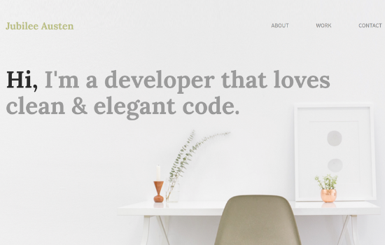
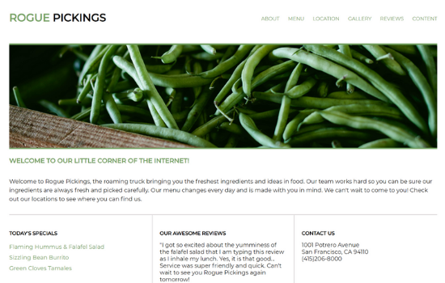
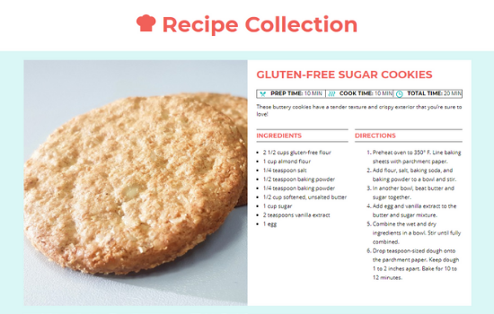

Let's code
something cool
My portfolio

Jubilee Austen Project
HTML 5 & CSS from Photoshop Design Comp
This is a single-page portfolio that focuses on raw HTML and CSS. Grids were hand-coded without the use of a framework. The focus for this piece was to refresh on pulling necessary information from a design comp to create a pixel perfect layout.
Live ViewView CodeRogue Pickings Project
HTML 5 & CSS Website
A practice piece working on grid layout, borders, and coding best practices to solidify good code structure.
Live ViewView Code


About Me
I'm passionate about the web.
I still remember the first time I coded in LOGO back in grade school. I didn’t know what it was or what I was doing, but it was fun. You could say that was the very beginning of my programming career. Fast-forward several years and I’m now a front-end developer expanding her horizons into full-stack. When I’m not coding, I’m riding horses or on the mats practicing jiu-jitsu.